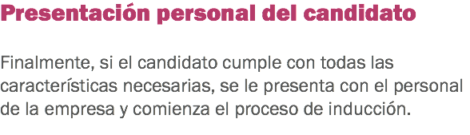

Motivar y retener al personal de hotelería


Selección de personal
![Entrevista La entrevista consiste en un diálogo entre dos personas con el objetivo de obtener una informacion determinada. Con ella, se pretende detectar los aspectos más importantes de los candidatos y su relación con el puesto que ocuparán, por ejemplo: facilidad para expresarse, habilidad para relacionarse, etc. En este paso, te darás cuenta si el candidato reúne o no los requisitos para el puesto. En caso de que el puesto sea recepcionista o algún puesto que involucre contacto directo con el huesped, si la persona no demuestra las habilidades de comunicación, facilidad de expresión o habilidad para relacionarse puedes descartar al candidato. Requisitos básicos a valorar en una entrevista:](images/u875-15.png)


![Pruebas psicométricas Estas pruebas son una forma de medir la conducta de un individuo, te permiten hacer comparaciones de una persona con otra y de una misma persona en diferentes momentos, y su objetivo es evaluar el grado de ajuste del candidato al puesto de trabajo con base en una serie de factores evaluados en cada una de las pruebas aplicadas. Existen cuatro tipos de pruebas psicométricas utilizadas para la selección de personal: 1. Test de inteligencia: sirve para medir la capacidad de aprender y aplicar lo aprendido de manera rápida y eficiente, a través de la comprensión y se manifiesta por la adaptación a situaciones cambiantes o rutinarias, facilidad para la toma de decisiones, iniciativa en la solución de problemas, por ello además de medir el índice de inteligencia de una persona se detectan también las habilidades intelectuales.
2. Test de personalidad: mide los aspectos de la persona enfocados al temperamento y carácter. El temperamento está constituido por las características que se pueden observar de comportamiento y que son predisposiciones heredadas, y el carácter que son características de comportamiento observable pero que son aprendidas y se fortalecen a lo largo de la vida y por la interacción con el medio ambiente.
3. Test de aptitudes y habilidades: mide en la persona capacidades, destrezas y competencias, las cuales van a influir de manera positiva o negativa para el logro de los objetivos del puesto.
4. Test proyectivos: sirven para valorar aspectos personales y sociales, de adaptación, de relación, conflictos internos de la vida de la persona que los realiza, esta valoración se basa en la forma en que el individuo interpreta la realidad.](images/u883-57.png)
![Pruebas de aptitudes Estos test tienen como objetivo detectar el potencial de las personas, que no depende sólo del aprendizaje. Las siguientes, son aptitudes que más suelen evaluarse en el proceso de selección del personal: • Aptitud verbal: determina la facilidad de la persona para comunicarse y comprender la información.
• Aptitud numérica: implica la capacidad de la persona para trabajar con números y resolver problemas de cálculo numérico.
• Aptitud espacial: obtiene resultados de como el participante visualiza los objetos en el espacio y comprender su relación espacial en las tres dimensiones.
• Aptitud abstracta: evalúan la capacidad para resolver problemas lógicos, permiten conocer la capacidad de razonar y analizar.
• Aptitud mecánica: evalúan la capacidad para manejar objetos y comprender mecanismos. Su objeto en común es el manejo de conceptos propios de la mecánica. • De atención: obtiene resultados de la capacidad de la persona para concentrarse sobre un determinado objeto, se basan en la percepción visual.](images/u885-40.png)
x


x

Haz clic en Regresar para volver al inicio.

Motivar y retener al personal de hotelería
Selección de personal
x
x
Haz clic en Regresar para volver al inicio.